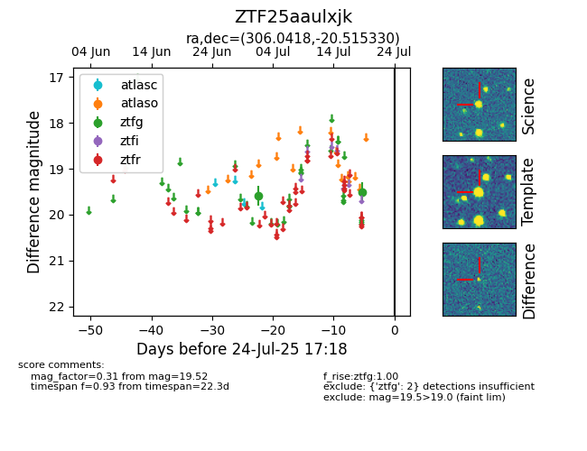

Target ZTF25aaulxjk at 2025-07-24 17:18, see:
FINK: fink-portal.org/ZTF25aaulxjk
Lasair: lasair-ztf.lsst.ac.uk/objects/ZTF25aaulxjk
ALeRCE: alerce.online/object/ZTF25aaulxjk
alt names
ZTF25aaulxjk (ztf,fink)
coordinates:
equatorial (ra, dec) = (306.0418,-20.51533)
galactic (l, b) = (23.4506,-29.20488)
photometry
last ztfg=19.52
2 ztfg detections
